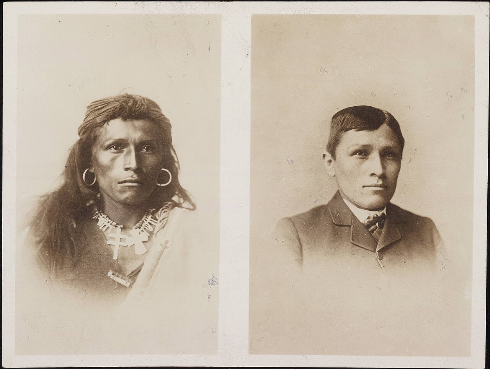

Directions: Study the paired photographs and the background note, then answer the questions.

Background. The Carlisle Indian Industrial School in Pennsylvania, founded in 1879, was the model for federal boarding schools. Its photographer, John N. Choate, made paired before and after portraits of arriving students. The school showed these pairs to officials and donors as proof that its program worked. Tom Torlino arrived in 1882 as a young Navajo man. After leaving Carlisle, he returned to Navajo country, where he worked as an interpreter and lived within Navajo community life.
assimilation: the process by which a person or group is made to adopt the customs and language of another culture
boarding school: a school that removed Native children from their families to suppress Native languages and cultures
1. List three specific changes between the two portraits. For each change, name what the school wanted a viewer to conclude from it.
2. These photographs were made by the school's own photographer to show to officials and donors. How should that fact change the way you use the pair as evidence about boarding schools?
3. The background note ends with Tom Torlino's life after Carlisle. Why does that ending complicate the story the photograph pair was built to tell? Answer in two or three sentences.
1. Accurate changes include hair cut short, Navajo clothing and jewelry replaced by a school uniform and tie, a blanket replaced by formal dress, and a posed studio portrait style in both. For each, the school wanted viewers to conclude that the student had been remade: orderly, civilized in the school's terms, and ready for American life. Award credit per change correctly paired with its intended message, up to three. Blueprint 11: assimilation and boarding schools.
2. The pair is advertising, not a neutral record. It was staged, selected, and published by the institution it praises, so it is strong evidence of what the school claimed and weak evidence of what students experienced or learned. Proficient answers add that nothing in the pair can show language loss, family separation, illness, or a student's own view. Blueprint 11: assimilation.
3. The pair implies a one way transformation: a Navajo young man enters and an assimilated American comes out. Torlino's return to Navajo country, his work as an interpreter, and his life in his community show that the change the school advertised was neither total nor permanent. Students should name the distinction between appearance in a staged portrait and a life actually lived. Blueprint 11: Native American dispossession, assimilation, and resistance.
Teacher note. This check is formative. The common weak answer lists surface changes on question 1 without the intended message, and treats the pair as a neutral document on question 2. Both misses point to the same reteach: every source in this lesson was made by someone, for someone. Name Tom Torlino when you discuss the check. He was a person, not a symbol, and the record of his life after Carlisle is part of the evidence.